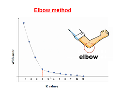

IA
Artificial intelligence or An Indian 4 ? That's the question.
Introduction
Principe
Le therme d'IA désigne des méthodes qui permettent d'effectuer des prises de décisions (ou des prédictions) à partir de la reproduction d'un comportement observé dans un ensemble de données1. On distinguera plusieurs grandes étapes :
- constitution d'une base de données d'apprentissage
- phase d'apprentissage où l'on entraîne une fonction de prédiction (où l'on crée la fameuse IA)
- phase d'exploitation du modèle où l'on réalise des prédictions (ou des inférences)
Typologie des problèmes d'apprentissage
On divise généralement les problèmes d'apprentissage en trois catégories :
- Apprentissage supervisé : on connaît le lien entre les données, l'algorithme cherche à l'apprendre. Exemples : k-NN, régression, réseaux de neurones.
- Apprentissage non supervisé : on ne connaît pas le lien entre les données, l'algorithme cherche à le découvrir. Exemple : k-means.
- Apprentissage par renforcement : pas de données étiquetées; un agent apprend une politique en interagissant avec un environnement et en recevant des récompenses (positives/négatives).
Concernant les données d'entrée
On divise la base de données d'apprentissage2 en trois parties : entraînement, validation et test. On détaillera plus tard la différence entre les deux dernières (pertinente pour les réseaux de neurones).
L'étape de modélisation consiste à choisir une représentation pertinente des données, elle est généralement suivie d'une étape de normalisation qui consiste à ramener les données à une échelle commune pour éviter que certaines soient prédominantes. On peut par exemple les ramener entre 0 et 1.
L'intérêt de cette étape est de s'assurer que les données soient comparables, par exemple lors d'un calcul de distance dans la méthode k-means.
Pour représenter les données on utilisera des vecteurs \(X_i\) (ensemble des features de la i-ème entité) associés à des labels \(y_i\) (ou des classes). Leurs dimensions sont indépendantes.
Mesures de performance
On cherche à mesurer la performance d'un algorithme, pour cela on mesure la qualité des prédictions à partie de la base de données d'apprentissage. La forme de cette mesure dépend du type de problème que l'on cherche à résoudre.
En classification binaire
Lorsque les sorties prennent des valeurs discrètes, on utilise la justesse (ou accuracy)3 : il s'agit de la proportion de prédictions correctes sur l'ensemble des prédictions.
\(\text{justesse} = \frac{1}{N} \sum_{i=1}^N \mathbb{1}_{\hat{y}_i = y_i}\)
où \(\hat{y}_i\) est la prédiction de l'algorithme et \(y_i\) la valeur réelle.
En régression
Lorsque les sorties prennent des valeurs continues, on utilise l'erreur moyenne quadratique (ou mean squared error) : il s'agit de la moyenne des carrés des erreurs entre la valeur réelle et la valeur prédite.
Il s'agit de cette fonction que l'on cherche à minimiser lors de l'apprentissage.
Classification multi-classes
Face à un problème à \(k\) classes, on utilise une matrice de confusion qui permet de visualiser les erreurs de classification.
| Predicted A | Predicted B | Predicted C | |
|---|---|---|---|
| Actual A | 50 | 2 | 3 |
| Actual B | 4 | 45 | 6 |
| Actual C | 1 | 5 | 40 |
Les termes sur la diagonale représentent les bonnes classifications, les autres termes représentent les erreurs de classification. On peut également observer si une classe est sur-représentée ou sous-représentée.
En bref
- Base de données d'apprentissage séparée en trois parties : entraînement, validation et test
- Entrainement/apprentissage :
- Choix d'une fonction de coût
- Minimisation de la fonction de coût sur la base d'apprentissage
- Validation de la fonction de coût sur la base de validation
- Inférence : utilisation
Régression
Régression linéaire
La régression linéaire est un algorithme d'apprentissage supervisé qui cherche à établir une relation entre les variables d'entrée et de sortie. Il s'agit d'un modèle paramétrique qui cherche à minimiser la somme des carrés des erreurs entre les valeurs prédites et les valeurs réelles.
Fonction coût et descente de gradient
On utilise l'erreur quadratique moyenne (ou mean squared error) comme fonction coût :
On utilisera donc le minimum de cette fonction; dans le cas d'une régression « simple » (une droite par exemple) il existe une solution analytique, la méthode des moindres carrés.
Pour des problèmes plus complexes, il n'existe pas toujours de solution analytique; on utilisera alors la descente de gradient. Il s'agit d'une méthode itérative qui consiste à calculer le gradient de la fonction coût par rapport aux paramètres du modèle et à les mettre à jour dans la direction opposée au gradient.
où \(\alpha\) est le taux d'apprentissage (ou learning rate) qui permet de contrôler la vitesse de convergence de l'algorithme. Il s'agit d'un paramètre important à régler : trop petit, il faudra beaucoup d'itérations pour converger; trop grand, il y a un risque de divergence.
Cette méthode peut s'illustrer ainsi :

On descend le long du gradient jusqu'à atteindre un minimum (comme si on descendait dans une cuve).
Régression logistique
La régression logistique est une technique statistique pour modéliser la probabilité d'un événement binaire. Elle modélise la probabilité d'appartenance à une classe en utilisant la fonction logistique (ou sigmoïde) :
Avec ici deux paramètres (cas particulier).
KNN et K-means
KNN
Le K plus proches voisins (ou KNN) est un algorithme d'apprentissage supervisé qui cherche à classer un point en fonction de ses voisins les plus proches. Il s'agit d'un algorithme de classification dit de lazy-learning car il ne présente pas de phase d'apprentissage.
L'algorithme procède en trois grandes étapes :
- calculer la distance entre le point à classer et tous les points de la base d'apprentissage
- trier les distances et sélectionner les \(k\) plus proches voisins
- prédire la classe du point à classer en fonction des classes des \(k\) plus proches voisins (majorité simple ou pondérée par la distance)
Pour évaluer la pertinence des prédictions, on utilise une matrice de confusion qui permet de visualiser les erreurs de classification.
K-means
L'algorithme K-means est un algorithme d'apprentissage non supervisé qui cherche à regrouper les données en \(k\) clusters. Il s'agit d'un algorithme itératif où les similitudes entre les données apparaissent comme des nuages de points : ce sont les clusters.
On construit ces \(k\) clusters (on a imposé \(k\)) par l'association de chaque point à son centre de gravité (ou centroïde).
L'algorithme débute avec des centroïdes aléatoires, puis il procède en deux étapes :
- Attribution : chaque point est associé au centroïde le plus proche (on utilise la distance euclidienne)
- Mise à jour : on calcule le nouveau centroïde de chaque cluster en prenant la moyenne des points qui lui sont associés
On répète ces deux étapes jusqu'à ce que les centroïdes ne changent plus (ou que la variation soit jugée suffisamment faible) ou que le nombre maximal d'itérations soit atteint.
Pour déterminer le nombre de clusters, on utilise la méthode du coude qui consiste à tracer la somme des carrés des distances entre les points et leurs centroïdes en fonction du nombre de clusters. On cherche le point où la courbe commence à se stabiliser (le coude).

Réseaux de neurones
Perceptron
Le neurone artificiel ou neurone formel (ou encore perceptron) est l'unité élémentaire de traitement d'un réseau neuronal.
flowchart LR
subgraph Entrées
x1(["x₁"])
x2(["x₂"])
x3(["x₃"])
xn(["xₙ"])
end
x1 --> |w₁| sum
x2 --> |w₂| sum
x3 --> |w₃| sum
xn --> |wₙ| sum
subgraph "Sommation pondérée"
sum((Σ)) --> |"z = Σwᵢxᵢ + b₀"| f
end
b([biais b₀]) --> sum
subgraph "Activation"
f["f(z)"] --> |"ŷ = f(z)"| y
end
y(["Sortie ŷ"])
classDef inputs fill:#b3e0ff,stroke:#0066cc,stroke-width:1px,color:#000000
classDef operation fill:#ffb3cc,stroke:#cc0044,stroke-width:2px,color:#000000
classDef bias fill:#b3ffb3,stroke:#008800,stroke-width:1px,color:#000000
classDef activation fill:#ccccff,stroke:#4444cc,stroke-width:2px,color:#000000
classDef output fill:#ffe6b3,stroke:#cc7700,stroke-width:1px,color:#663800
class x1,x2,x3,xn inputs
class sum operation
class b bias
class f activation
class y outputFonctionnement mathématique
- Entrées pondérées: Chaque entrée \(x_i\) est multipliée par son poids associé \(w_i\)
- Sommation: Les produits sont additionnés avec le biais \(b_0\): \(z = \sum_{i=1}^{n} w_i x_i + b_0\)
- Activation: La somme est passée à travers la fonction d'activation: \(\hat{y} = f(z)\)
La fonction d'activation \(f\) peut prendre différentes formes (sigmoïde, ReLU, tanh, etc.) selon l'application visée. Ces fonctions ne sont pas linéaires.
- La relation entre les entrées et la sortie est appelée équation de propagation.
Apprentissage et limites
Lors d'une utilisation d'un neurone comme classifieur le neurone n'est capable que de séparer des données linéairement séparables. Par exemple, il ne pourra pas séparer des données en forme de cercle.
On utilise alors des réseaux de neurones qui sont des ensembles de neurones organisés en couches.
Réseau de neurones - Perceptron multicouche
Un réseau de neurones est constitué de plusieurs couches de neurones interconnectés. Cette interconnexion se fait entre couches successives :
- une couche d'entrée qui réalise une simple copie
- des couches intermédiaires (ou couches cachées)
- qui ont des nombres de neurones différents mais
- qui ont la même fonction d'activation
- une couche de sortie
- des couches intermédiaires (ou couches cachées)
flowchart LR
%% Couche d'entrée
subgraph "Couche d'entrée"
x1(["x₁"])
x2(["x₂"])
x3(["x₃"])
end
%% Première couche cachée
subgraph "Couche cachée 1"
h11((h₁¹))
h12((h₂¹))
h13((h₃¹))
end
%% Deuxième couche cachée
subgraph "Couche cachée 2"
h21((h₁²))
h22((h₂²))
end
%% Couche de sortie
subgraph "Couche de sortie"
y1(["ŷ₁"])
y2(["ŷ₂"])
end
%% Connexions entre couche d'entrée et première couche cachée
x1 --> h11 & h12 & h13
x2 --> h11 & h12 & h13
x3 --> h11 & h12 & h13
%% Connexions entre première et deuxième couche cachée
h11 --> h21 & h22
h12 --> h21 & h22
h13 --> h21 & h22
%% Connexions entre deuxième couche cachée et couche de sortie
h21 --> y1 & y2
h22 --> y1 & y2
%% Styles pour les différentes parties du diagramme
classDef inputs fill:#b3e0ff,stroke:#0066cc,stroke-width:1px,color:#000000
classDef hidden1 fill:#ffb3cc,stroke:#cc0044,stroke-width:2px,color:#000000
classDef hidden2 fill:#ccccff,stroke:#4444cc,stroke-width:2px,color:#000000
classDef outputs fill:#ffe6b3,stroke:#cc7700,stroke-width:1px,color:#000000
class x1,x2,x3 inputs
class h11,h12,h13 hidden1
class h21,h22 hidden2
class y1,y2 outputsApprentissage
On cherche à minimiser la fonction coût sur l'ensemble des données d'apprentissage, qu'on peut choisir comme étant la MSE.
Minimiser la fonction coût revient à optimiser les poids du réseau de neurones. On utilise la rétropropagation (ou backpropagation) qui consiste à calculer le gradient de la fonction coût par rapport aux poids du réseau et à les mettre à jour en suivant la direction opposée du gradient.
On peut effectuer ce calcul sur un groupe de données appelé batch afin de limiter le temps/coût de calcul.
Critère d'arrêt - Risque de sur-apprentissage
A force d'itérations, le réseau de neurones peut apprendre à mémoriser les données d'apprentissage au lieu d'apprendre à généraliser. On parle de sur-apprentissage (ou overfitting). Pour éviter cela, on utilise un ensemble de validation qui permet de vérifier la performance du modèle sur des données non vues. On arrête l'apprentissage lorsque la performance sur l'ensemble de validation commence à diminuer.
Comparaison des méthodes
| Modèle linéaire (régression ou classification) | k plus proches voisins | Réseaux de neurones (éventuellement profonds) | |
|---|---|---|---|
| Temps de calcul à l'apprentissage | + Inversion de matrice et calcul de \(X^T X\) \(\mathcal{O}(d^3 + nd^2)\) mais existence de méthodes numériques plus efficaces | ++ Stockage des données de la base de donnée d'entraînement | -- Procédure longue et coûteuse notamment sur de grandes bases de données |
| Temps de calcul à la prédiction | ++ 1 Produit matrice vecteur \(\mathcal{O}(d \times p)\) | - Tri d'un tableau de distances \(\mathcal{O}(n \log(n))\) | + Séquence de produits matrice vecteur |
| Performances avec peu de données d'entraînement | ++ Peu de paramètres à apprendre → bonnes performances avec peu de données | + Performances correctes avec peu de voisins | -- Peu de paramètres par couche conduisent à un modèle proche du linéaire |
| Performances avec données abondantes | - Peu de paramètres apprenables | + Réglage du nombre de voisins | ++ Grande flexibilité de la fonction de prédiction |
| Performances avec données complexes (image / texte) | - Représentation des entrées difficile à adapter efficacement | - Difficile de choisir une distance correcte | ++ Possibilité d'adapter les couches cachées aux propriétés des entrées |
-
Bien évidemment acquises en toute légalité comme Nvidia, Meta ↩
-
Toujours acquise dans le respect des droits d'auteurs, n'est-ce pas ? ↩
-
A ne pas confondre avec la précision (ou precision) qui permet de mesurer la proportion de faux positifs dans les prédictions. ↩
-
Ceci est une vraie question et Microsoft c'est fait avoir. ↩